Chapter: Simple Linear Regression¶
1. Introduction and Problem Formulation¶
[Source: Linear Regression.pdf, Slide 1-2]
1.1 Motivation: Housing Price Prediction¶
Linear regression is one of the most foundational supervised learning algorithms in machine learning. Its primary objective is to predict a continuous target variable \(y \in \mathbb{R}\) given an input feature vector \(x \in \mathbb{R}^n\).
Consider a real-estate dataset where the objective is to predict the Selling Price (in Lacs) of a house based on its Area (in Square Meters, SQM).
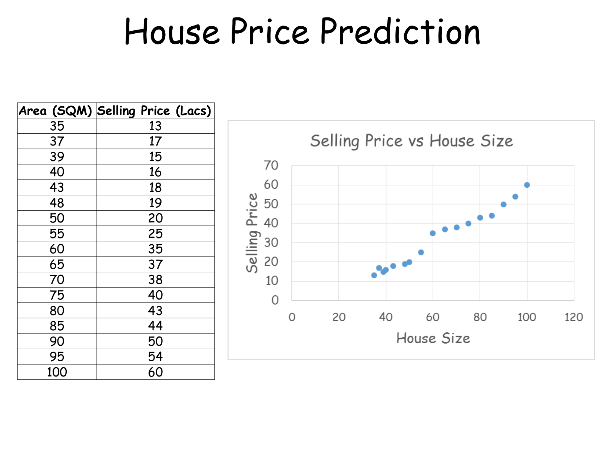
Training Dataset Example:¶
The dataset consists of \(m = 16\) historical observations \((x^{(i)}, y^{(i)})\):
| Example (\(i\)) | Area \(x^{(i)}\) (SQM) | Selling Price \(y^{(i)}\) (Lacs) |
|---|---|---|
| 1 | 35 | 13 |
| 2 | 37 | 17 |
| 3 | 39 | 15 |
| 4 | 40 | 16 |
| 5 | 43 | 18 |
| 6 | 48 | 19 |
| 7 | 50 | 20 |
| 8 | 55 | 25 |
| 9 | 60 | 35 |
| 10 | 65 | 37 |
| 11 | 70 | 38 |
| 12 | 75 | 40 |
| 13 | 80 | 43 |
| 14 | 85 | 44 |
| 15 | 90 | 50 |
| 16 | 100 | 60 |
2. Hypothesis Function and Model Representation¶
[Source: Linear Regression.pdf, Slide 3-6]
In univariate (simple) linear regression, we model the relationship between the independent variable \(x\) and dependent variable \(y\) using a linear equation.
2.1 The Linear Hypothesis¶
The hypothesis function \(h_\theta(x)\) (or predicted output \(\hat{y}\)) is defined as:
Where: - \(x\): Input feature (e.g., House Area in SQM). - \(y\): Actual target value (e.g., Selling Price in Lacs). - \(\hat{y} = h_\theta(x)\): Predicted target value. - \(\theta_0\): Y-intercept parameter (bias term), representing predicted value when \(x = 0\). - \(\theta_1\): Slope parameter (weight/coefficient), representing rate of change of \(\hat{y}\) per unit change in \(x\). - \(\theta = (\theta_0, \theta_1)^T\): Parameter vector of the model.
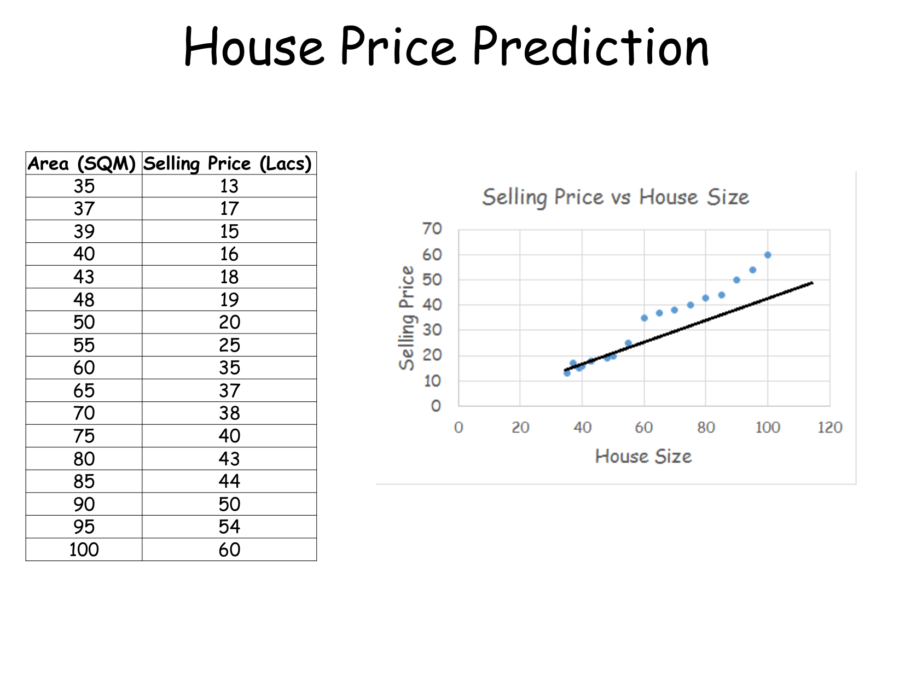
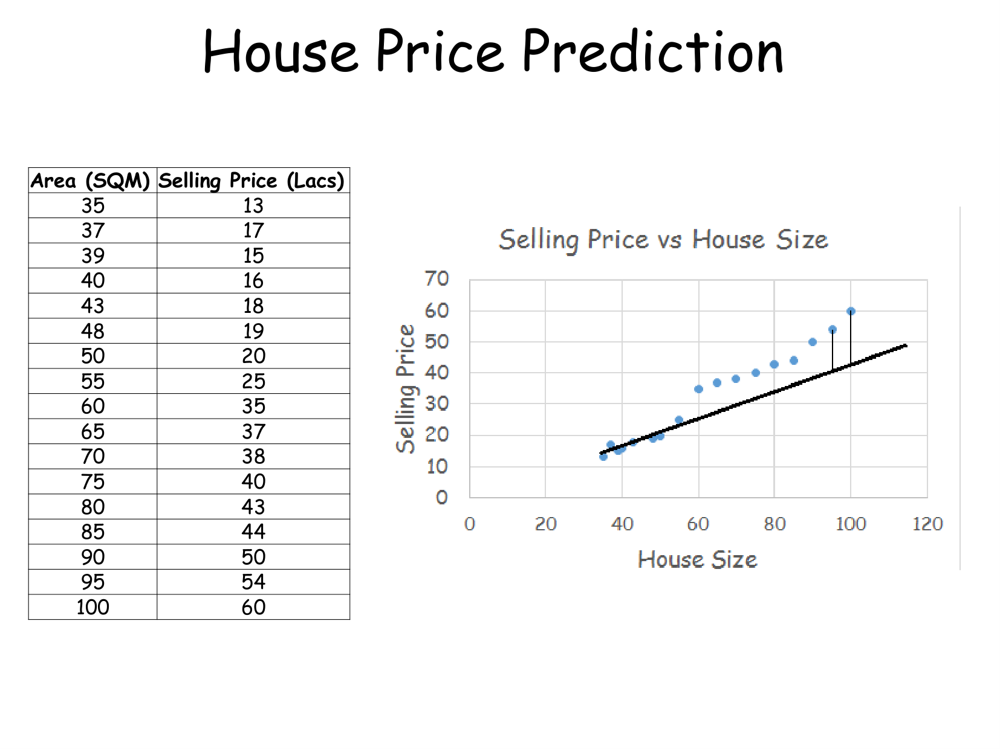
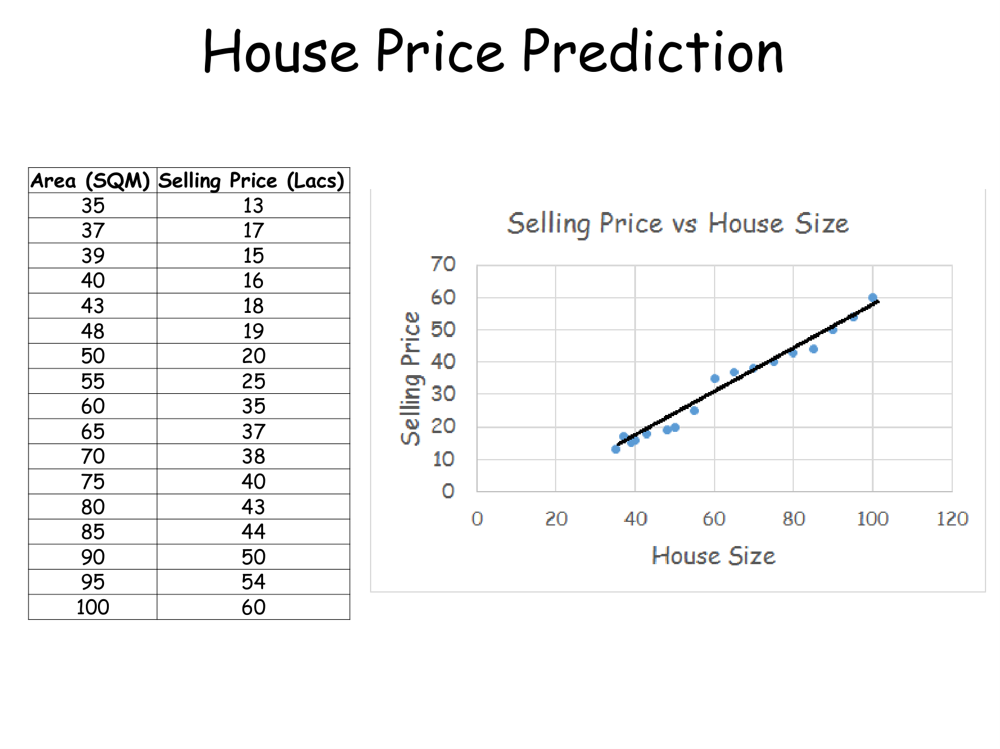
3. Cost Function Derivation¶
[Source: Linear Regression.pdf, Slide 7-8]
3.1 Residual Error¶
For any training instance \((x^{(i)}, y^{(i)})\), the residual (error) is defined as the vertical distance between the actual target \(y^{(i)}\) and predicted output \(h_\theta(x^{(i)})\):
3.2 Formulation of Mean Squared Error (MSE)¶
Why do we use Mean Squared Error rather than raw or absolute errors? 1. Raw Sum of Errors: \(\sum_{i=1}^m (y^{(i)} - \hat{y}^{(i)})\) allows positive and negative errors to cancel each other out, making a terrible model appear to have zero error. 2. Absolute Errors (MAE): \(\sum_{i=1}^m |y^{(i)} - \hat{y}^{(i)}|\) is non-differentiable at zero, creating optimization difficulties for derivative-based algorithms. 3. Squared Errors (MSE): \((y^{(i)} - \hat{y}^{(i)})^2\) ensures strictly non-negative penalty, heavily penalizes larger outliers, and produces a smooth, differentiable quadratic surface.
The Mean Squared Error cost function \(J(\theta_0, \theta_1)\) is mathematically defined as:
Where: - \(m\): Total number of training examples. - \(\frac{1}{2}\): Scaling factor introduced for mathematical convenience to cleanly cancel out the power \(2\) during partial differentiation.
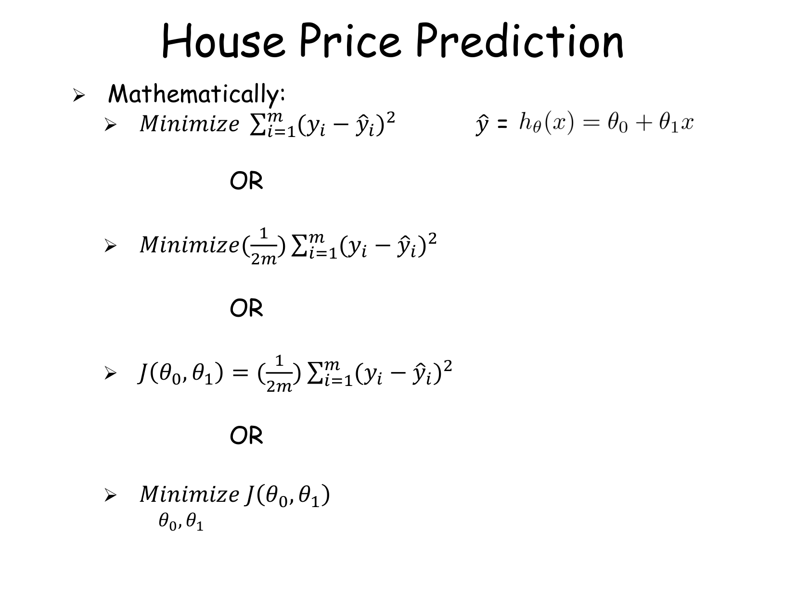
3.3 Geometry of the Cost Function Surface¶
The cost function \(J(\theta_0, \theta_1)\) forms a 3-dimensional convex paraboloid (bowl shape). Because \(J(\theta_0, \theta_1)\) is strictly convex, it possesses a single unique global minimum and zero local minima.
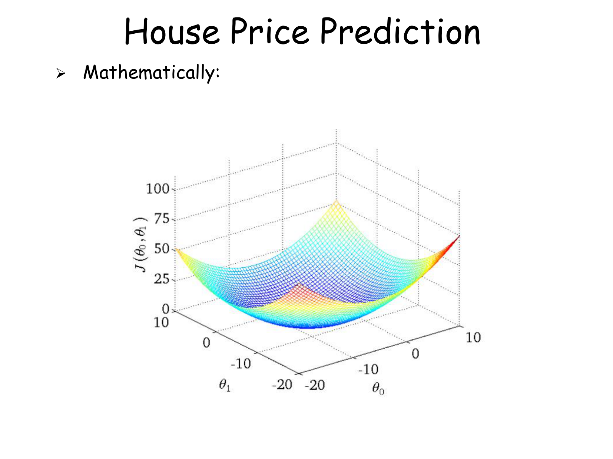
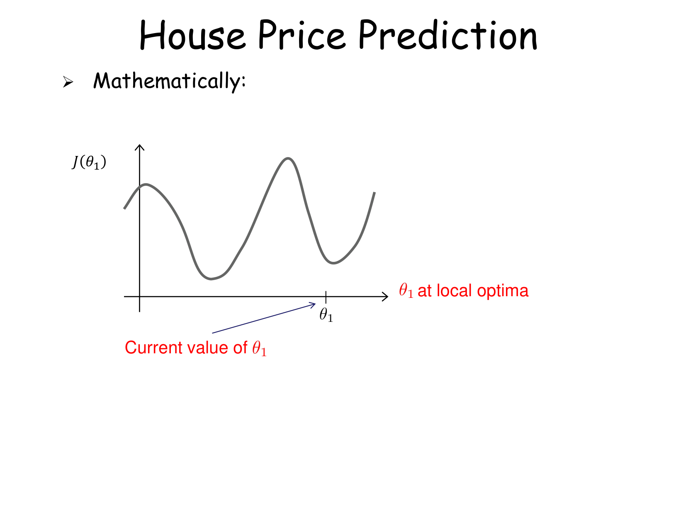
4. Optimization via Gradient Descent Algorithm¶
[Source: Linear Regression.pdf, Slide 10-16]
4.1 Gradient Descent Intuition¶
Gradient Descent is an iterative optimization algorithm used to minimize \(J(\theta_0, \theta_1)\). Starting from an initial guess \((\theta_0^{(0)}, \theta_1^{(0)})\), the algorithm takes steps in the direction of steepest descent (opposite to the gradient vector \(\nabla J\)).
4.2 Simultaneous Update Rule¶
The general update rule for parameter \(\theta_j\) (\(j = 0, 1\)) is:
⚠️ CRITICAL RULE: Simultaneous Updates¶
Parameters \(\theta_0\) and \(\theta_1\) MUST be updated simultaneously at every iteration.
| Correct (Simultaneous Update) | Incorrect (Sequential Update) |
|---|---|
| \(\text{temp0} := \theta_0 - \alpha \frac{\partial}{\partial \theta_0} J(\theta_0, \theta_1)\) | \(\theta_0 := \theta_0 - \alpha \frac{\partial}{\partial \theta_0} J(\theta_0, \theta_1)\) |
| \(\text{temp1} := \theta_1 - \alpha \frac{\partial}{\partial \theta_1} J(\theta_0, \theta_1)\) | \(\theta_1 := \theta_1 - \alpha \frac{\partial}{\partial \theta_1} J(\theta_0, \theta_1)\) |
| \(\theta_0 := \text{temp0}\) | (Here \(\theta_1\) is computed using updated \(\theta_0\), breaking gradient direction!) |
| \(\theta_1 := \text{temp1}\) |
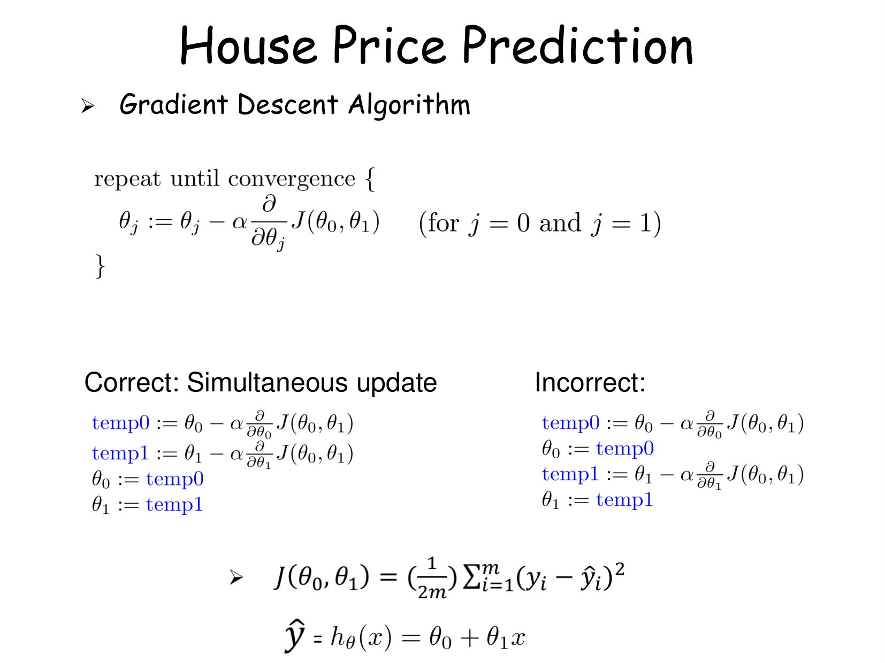
4.3 Derivative Expressions for Linear Regression¶
Let us compute partial derivatives of \(J(\theta_0, \theta_1)\) with respect to \(\theta_0\) and \(\theta_1\):
Applying chain rule:
Since \(h_\theta(x^{(i)}) = \theta_0 + \theta_1 x^{(i)}\): - For \(j = 0\): \(\frac{\partial}{\partial \theta_0} h_\theta(x^{(i)}) = 1\) - For \(j = 1\): \(\frac{\partial}{\partial \theta_1} h_\theta(x^{(i)}) = x^{(i)}\)
Concrete Derivative Formulas:¶
Full Gradient Descent Algorithm:¶
Repeat until convergence:
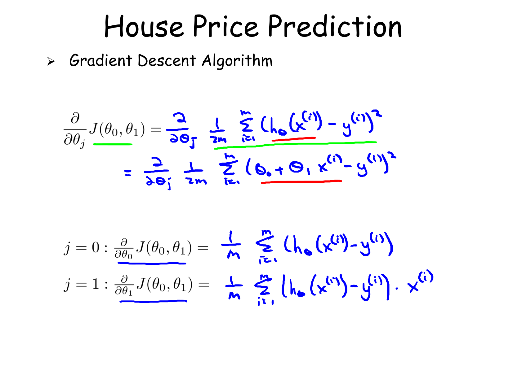
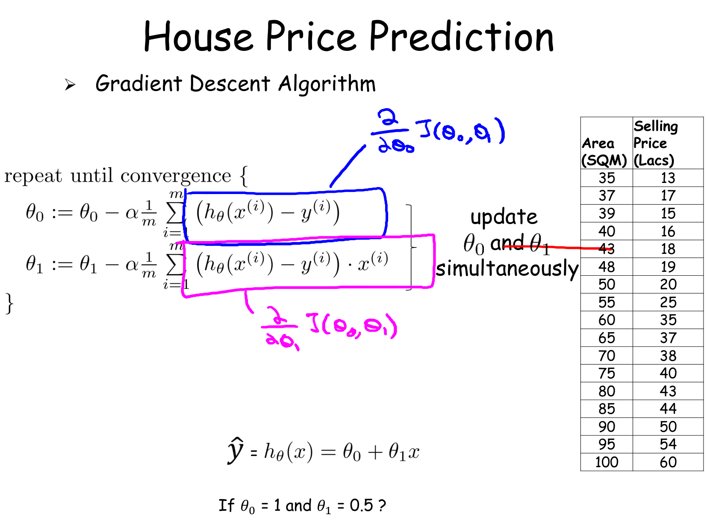
4.4 Impact of Learning Rate \(\alpha\)¶
The scalar learning rate \(\alpha > 0\) controls the step size taken per iteration:
- If \(\alpha\) is too small: Gradient descent takes tiny micro-steps, leading to extremely slow convergence.
- If \(\alpha\) is too large: Gradient descent overshoots the minimum, fluctuates, and may diverge (\(\lim_{k \to \infty} J(\theta) = \infty\)).
- Slope Direction:
- If slope \(\frac{\partial J}{\partial \theta_1} > 0\), \(\theta_1 := \theta_1 - \alpha (\text{positive}) \implies \theta_1\) decreases towards optimum.
- If slope \(\frac{\partial J}{\partial \theta_1} < 0\), \(\theta_1 := \theta_1 - \alpha (\text{negative}) \implies \theta_1\) increases towards optimum.
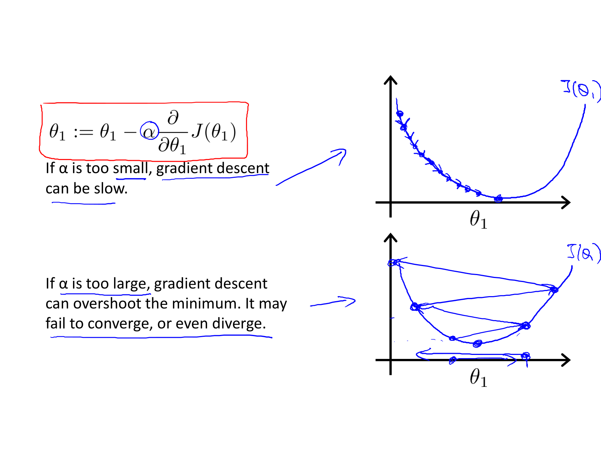
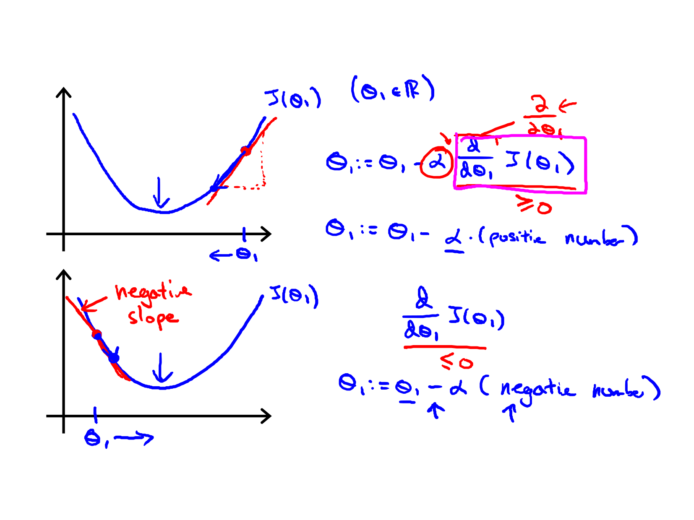
4.5 Batch Gradient Descent¶
This algorithm is called "Batch" Gradient Descent because each step of gradient descent evaluates the error over the entire batch of \(m\) training examples (\(\sum_{i=1}^m\)).
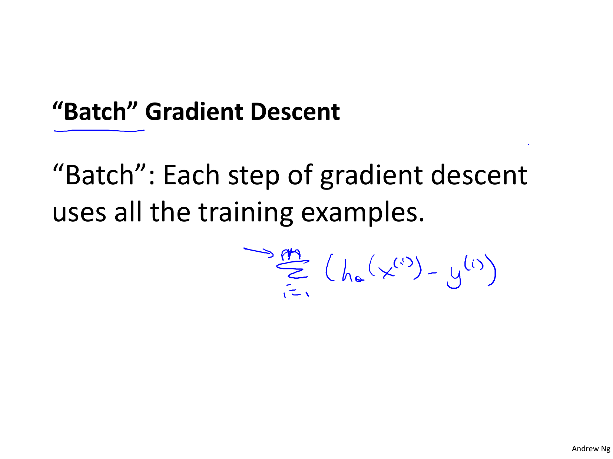
5. Architectural & Algorithmic Workflow¶
flowchart TD
A[Input Training Dataset (x, y)] --> B[Initialize Parameters theta_0, theta_1]
B --> C[Compute Predictions h_theta(x) = theta_0 + theta_1 * x]
C --> D[Calculate Residuals e_i = h_theta(x_i) - y_i]
D --> E[Compute MSE Cost J(theta_0, theta_1)]
E --> F[Calculate Gradients dJ/dtheta_0 and dJ/dtheta_1]
F --> G[Simultaneously Update theta_0 and theta_1]
G --> H{Has J(theta) Converged?}
H -- No --> C
H -- Yes --> I[Output Optimal Parameters theta_0*, theta_1*]6. Definitions and Terms¶
Definition: Simple Linear Regression¶
A supervised learning technique that models the linear scalar relationship between a single independent input variable \(x\) and a continuous dependent output variable \(y\).
Definition: Hypothesis Function¶
The parametric model function \(h_\theta(x) = \theta_0 + \theta_1 x\) used to predict output value \(\hat{y}\) for a given input \(x\).
Definition: Cost Function (MSE)¶
A mathematical objective function \(J(\theta) = \frac{1}{2m}\sum_{i=1}^m (h_\theta(x^{(i)}) - y^{(i)})^2\) measuring the average squared error between predictions and true target values.
Definition: Gradient Descent¶
An iterative optimization algorithm that updates parameters in the direction of steepest negative gradient of the cost function: \(\theta := \theta - \alpha \nabla_\theta J(\theta)\).
Definition: Learning Rate (\(\alpha\))¶
A positive hyperparameter determining the magnitude of step size taken along the negative gradient direction during each iteration.
Definition: Simultaneous Update¶
The mandatory practice of computing all parameter updates using current iteration values before updating any parameter state.
7. Formula Sheet¶
| Formula Name | Mathematical Expression |
|---|---|
| Hypothesis Function | \(h_\theta(x) = \theta_0 + \theta_1 x\) |
| Residual Error | \(e^{(i)} = y^{(i)} - h_\theta(x^{(i)})\) |
| Cost Function (MSE) | \(J(\theta_0, \theta_1) = \frac{1}{2m} \sum_{i=1}^{m} (h_\theta(x^{(i)}) - y^{(i)})^2\) |
| Partial Derivative w.r.t. \(\theta_0\) | \(\frac{\partial J}{\partial \theta_0} = \frac{1}{m} \sum_{i=1}^{m} (h_\theta(x^{(i)}) - y^{(i)})\) |
| Partial Derivative w.r.t. \(\theta_1\) | \(\frac{\partial J}{\partial \theta_1} = \frac{1}{m} \sum_{i=1}^{m} (h_\theta(x^{(i)}) - y^{(i)}) \cdot x^{(i)}\) |
| \(\theta_0\) Update Rule | \(\theta_0 := \theta_0 - \alpha \frac{1}{m} \sum_{i=1}^{m} (h_\theta(x^{(i)}) - y^{(i)})\) |
| \(\theta_1\) Update Rule | \(\theta_1 := \theta_1 - \alpha \frac{1}{m} \sum_{i=1}^{m} (h_\theta(x^{(i)}) - y^{(i)}) x^{(i)}\) |
8. Definition Sheet¶
- Supervised Learning: Learning paradigm where training instances are pairs of input features and ground-truth labels.
- Parametric Model: Model characterized by a fixed set of learnable parameters \(\theta\).
- Convex Function: Function where line segment connecting any two points lies above/on graph, guaranteeing single global minimum.
- Global Minimum: Parameter state \(\theta^*\) where \(J(\theta^*) \le J(\theta)\) for all valid \(\theta\).
- Batch Gradient Descent: Gradient descent variant evaluating all \(m\) training instances per step.
9. Exam-Oriented Review¶
9.1 Potential Exam Questions¶
- Explain why the scaling factor \(\frac{1}{2m}\) is used in the MSE cost function \(J(\theta_0, \theta_1)\) instead of \(\frac{1}{m}\).
-
Solution: The factor \(\frac{1}{m}\) computes average squared error across \(m\) samples. The factor \(\frac{1}{2}\) is introduced so that when taking the partial derivative \(\frac{\partial}{\partial \theta} (h_\theta(x) - y)^2\), the derivative power \(2\) cleanly cancels out with \(\frac{1}{2}\), yielding \(\frac{1}{m} (h_\theta(x) - y)\) without extra numerical constants.
-
What occurs during Gradient Descent optimization if parameter updates are executed sequentially instead of simultaneously?
-
Solution: Sequential update updates \(\theta_0\) first, and then calculates \(\frac{\partial J}{\partial \theta_1}\) using the new \(\theta_0\) value within the same iteration. This alters the gradient vector trajectory away from the true direction of steepest descent, causing inefficient convergence paths or algorithmic divergence.
-
Why does \(J(\theta_0, \theta_1)\) for linear regression have no local minima?
- Solution: The mean squared error cost function for linear regression is a linear combination of quadratic terms, which is strictly convex. Convex functions possess the mathematical property that any local minimum is identically the unique global minimum.
9.2 Edge Cases and Pitfalls¶
- Unscaled Features: If feature \(x\) has very large magnitude compared to \(y\), cost surface contours become elongated ellipses, causing gradient descent steps to oscillate wildly unless learning rate \(\alpha\) is set extremely small.
- Zero Gradient at Local/Global Optima: At optimum \(\theta^*\), \(\nabla J(\theta^*) = 0\). Consequently, gradient descent automatically takes zero step size: \(\theta := \theta - \alpha(0) = \theta\), cleanly remaining at optimum without reducing \(\alpha\).
9.3 Numerical Problem & Step-by-Step Solution¶
Problem: Consider a dataset with \(m = 3\) samples: - \((x^{(1)}, y^{(1)}) = (1, 2)\) - \((x^{(2)}, y^{(2)}) = (2, 3)\) - \((x^{(3)}, y^{(3)}) = (3, 5)\)
Given current parameter values \(\theta_0 = 0\), \(\theta_1 = 1\), and learning rate \(\alpha = 0.1\): 1. Calculate predicted values \(h_\theta(x^{(i)})\) for all samples. 2. Compute cost \(J(\theta_0, \theta_1)\). 3. Perform one step of simultaneous Gradient Descent update to calculate new parameters \(\theta_0^{(new)}\) and \(\theta_1^{(new)}\).
Step-by-Step Solution:
Step 1: Compute Predictions \(h_\theta(x^{(i)}) = 0 + 1 \cdot x^{(i)}\): - \(h_\theta(x^{(1)}) = 1 \cdot 1 = 1\) - \(h_\theta(x^{(2)}) = 1 \cdot 2 = 2\) - \(h_\theta(x^{(3)}) = 1 \cdot 3 = 3\)
Step 2: Calculate Errors \((h_\theta(x^{(i)}) - y^{(i)})\): - \(e^{(1)} = 1 - 2 = -1\) - \(e^{(2)} = 2 - 3 = -1\) - \(e^{(3)} = 3 - 5 = -2\)
Step 3: Compute Cost \(J(\theta_0, \theta_1)\):
Step 4: Compute Gradients:
Step 5: Simultaneous Gradient Descent Update:
Final Answer: - Initial Cost \(J(0,1) = 1.0\) - Updated parameters: \(\theta_0^{(new)} = 0.1333\), \(\theta_1^{(new)} = 1.3000\).